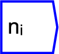
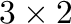

The operator can be placed on the canvas in two ways:
 ;
or
;
or

rank 2 tensor with named axes ``0'' and ``1'', size(``1'')==2.If the axis argument is left blank, the size returns the total number of elements present in the tensor. This may be less than the product of axis sizes if the data is sparse—which will normally be the case.